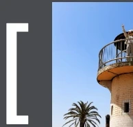
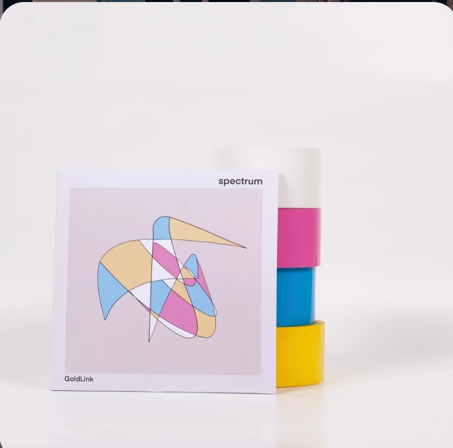
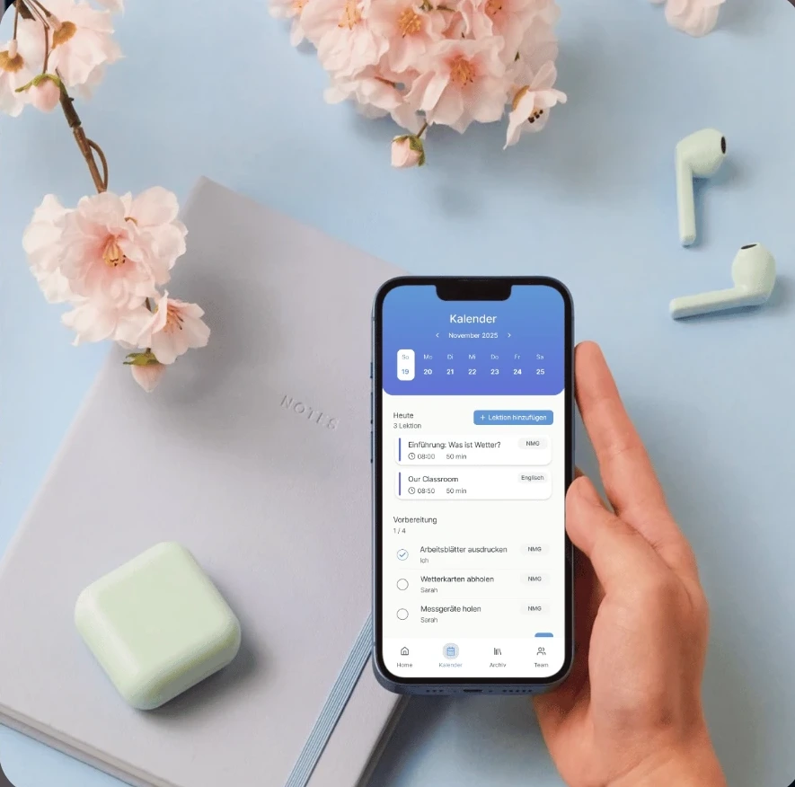
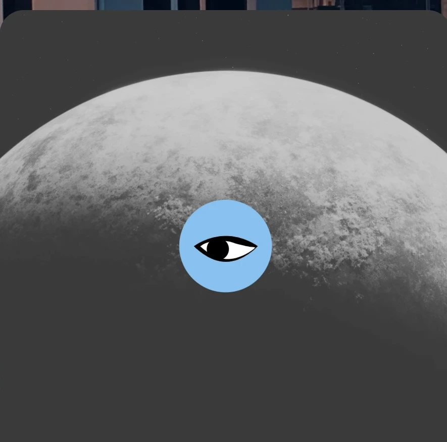
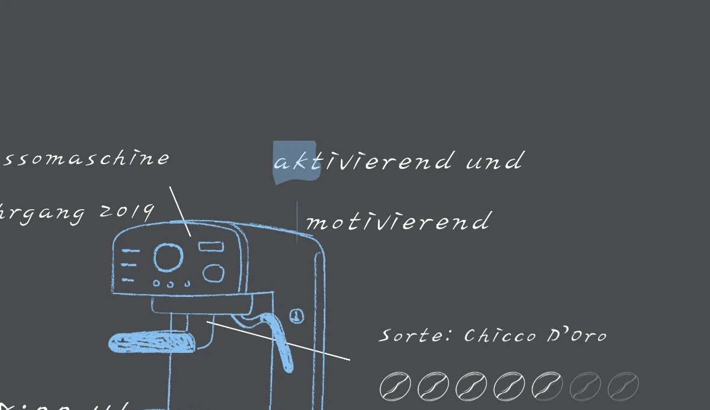

Hi ich heisse Sara, Webdesignerin [ 
und Frontend Entwicklerin aus St. Gallen
[  ] ich gestalte digitale Erlebnisse
] ich gestalte digitale Erlebnisse
an der Schnittstelle von Technologie und Empathie
Port
Eine Sammlung meiner Projekte – persönlich wie beruflich, die meine visuellen Stil und gestalterischen Kompetenzen widerspiegeln.
Type

Lesson

Unpo

Digital Designerin, UI/UX Designerin & Frontend Entwicklerin
mit Fokus auf [ ]
menschenzentrierte
Erlebnisse
Mich interessiert, nicht nur was Design funktioniert, sondern wie es Menschen wirklich erreicht – besonders in sensiblen Kontexten. In meiner Arbeit verbinde ich nutzerzentriertes Denken mit technologischen Möglichkeiten wie Virtual Reality. Mein Fokus liegt darauf, komplexe Technologien so zu gestalten, dass sie zugänglich, verständlich und emotional wirksam werden. In meiner Bachelorarbeit entwickelte ich eine VR-Erfahrung für Menschen mit Demenz. Durch intensive Recherche, persönliche Einblicke und iterative Tests entstanden Ansätze, die Erinnerungen aktivieren, Nähe fördern und neue Formen der Begegnung eröffnen. Dabei begleitet mich stets der Wunsch, Inhalte selbst zu entwickeln, strukturiert und visuell präzise – vom Research über Storyboards bis zur Umsetzung. Gute UX ist für mich, Lösungen nicht nur funktional, sondern auch bedeutungsvoll zu gestalten.
Mein Alltag
Start in den Tag mit Kaffee
